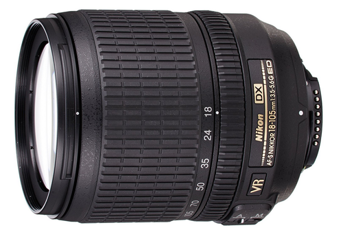
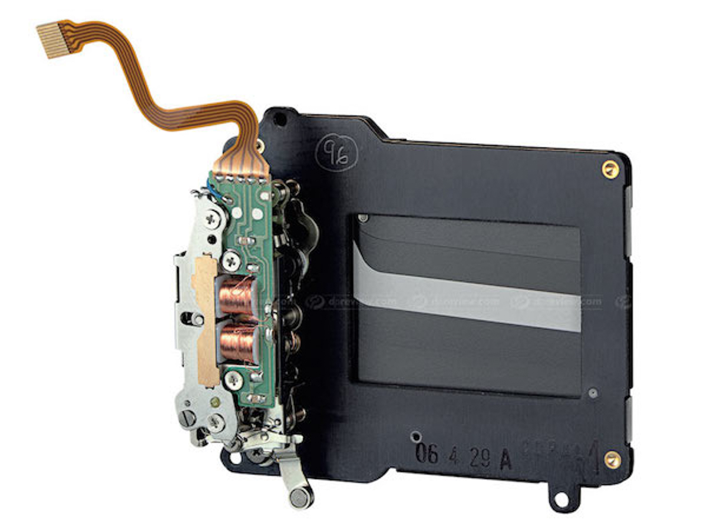

Diafragma obiectivului Nikon 15-45mm

Diafragma obiectivului Nikon 150-300mm
Elementul ce controlează cantitatea de lumină ce ajunge pe sensor.
Se măsoară cu ajutorul numărului f/.
f/ = d : f2
d=diametul obiectivului
f2=distanța focală
Ex: obiectivul din imagine are
un diametru (d) de 67 mm și
o distanță focală minimă de 18mm.
Folosind formula rezultă o diafragma minimă de f/=~3.6 ... destul de aproape de 3.5 (cât scrie pe site-ul Nikon)
Este o "perdea" ce limitează durata în care lumina ajunge pe senzor
Cu cât viteza obturatorului este mai scazută, cu atât fotografia va ieși mai luminoasă dar aceasta poate fi mișcată
Electronic
Prezent în aparatele de fotografiat moderne
Scade timpul de expunere până la 1/20.000
Nu produce zgomot la declanșare

Mecanic
Reduce distorsiunea "Obturator oscilant"
Variantele mai vechi foloseau un motor electric :

Cele moderne folosesc electromagneți :
